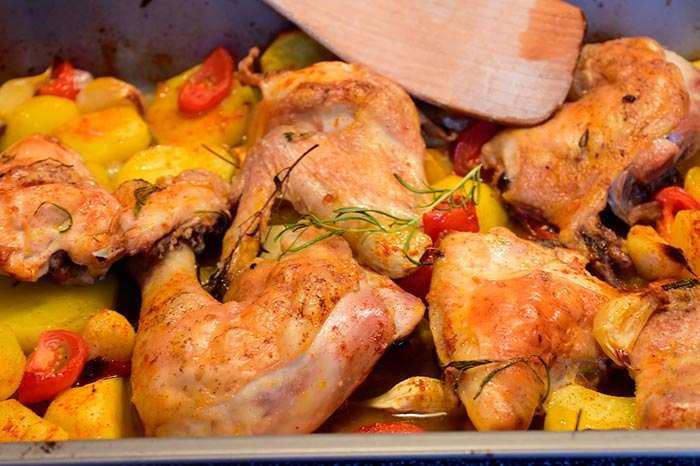

Pollo al Horno
Receta de Pollo al Horno.

Ingredientes
- 1 Pollo (pechugas y muslos)
- Patatas
- 6 dientes de ajo
- Vino blanco
- Sal
- Peregil
Preparación
- Precalentar el horno a 200º duarante 15 minutos.
- Aliñaremos el pollo con peregil y un poco de sal
- Añadir patatas cortadas en trozos y los ajos.
- Añadiremos también vino blanco hasta cubrir la mitad del bol.
- Introducimos el bol en el horno durante 40 minutos.
- Servimos en un plato y listo
Para volver pinchar aquí.